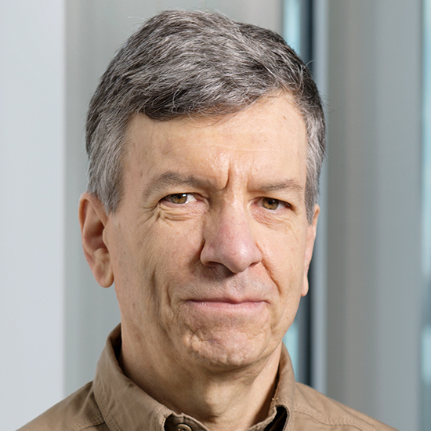
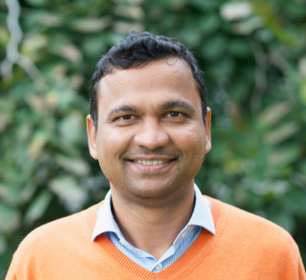
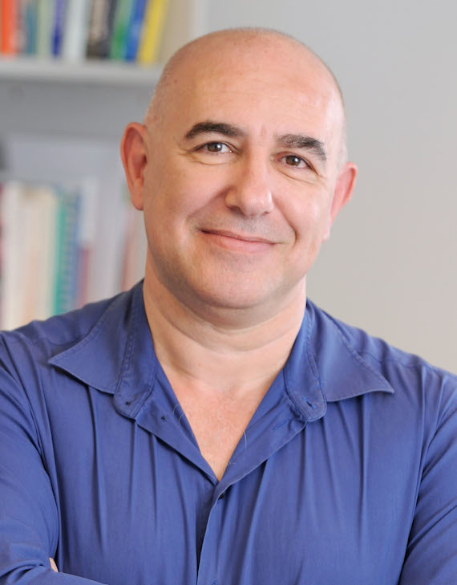
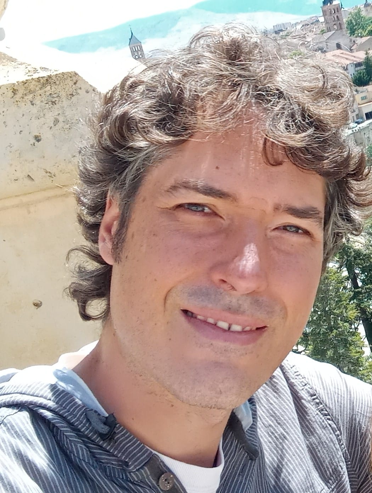
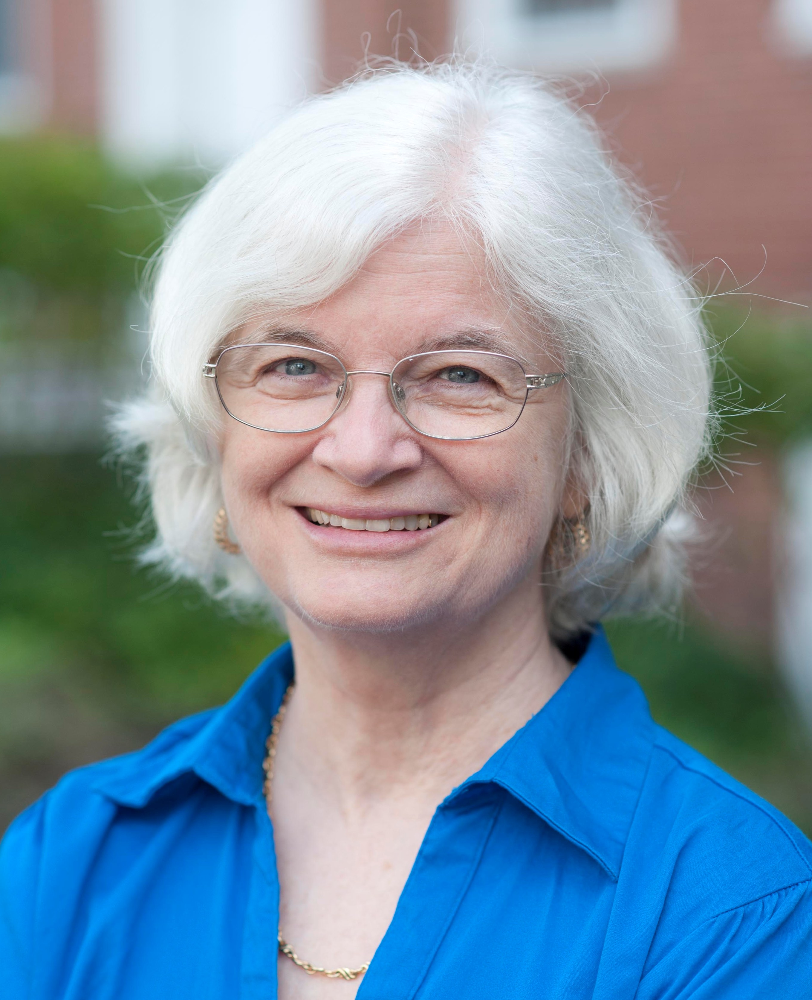

CELLS: Workshop on Computing among Cells
CELLS: Workshop on Computing among Cells
DISC'21
DISC'21
CELLS is a DISC 2021 workshop. Please see the DISC page for further information. The workshop will take place online. Zoom links to the talks are provided after registration.
Scope
Scope
The workshop is intended to cover topics both from computer science and microbiology with a focus on computation emerging from microbiological units (bacteria, viruses, DNA, etc.) interacting with each other.
Topics include, but are not limited to: synthetic biology, bacterial computing, DNA computing, population protocols, Markov chains, modeling with cellular automata, infection models, and evolutionary models.
Program
Program
Talks will be held online on October 8th, 2021 (starting 11 AM, Central European Summer Time).
Friday, October 8, 2021 (CEST times):
- 11:00 AM. Luca Cardelli
- 12:00 PM. Kiran Raosaheb Patil
- 1:00 PM. 60min break
- 2:00 PM. Mustafa Khammash
- 3:00 PM. Ángel Goñi-Moreno
- 4:00 PM. Nancy Lynch
Registration
Local
Attendance to the workshop is free of charge. Please register via the DISC'21 page. Zoom links to talks will be provided on registration.
Speakers
Speakers
CELLS'21 speakers in order of appearance are:
Luca Cardelli (University of Oxford)
 Luca Cardelli has an M.Sc. in computer science from the University of Pisa, and a Ph.D. in computer science from the University of Edinburgh. He worked at Bell Labs Murray Hill from 1982 to 1985, at Digital Equipment Corporation Systems Research Center in Palo Alto from 1985 to 1997, and at Microsoft Research in Cambridge UK from 1997 to 2018 where he was head of the Programming Principles and Tools and Security groups until 2012. Since 2013 he is a Royal Society Research Professor at the University of Oxford.
His main interests are in programming languages and concurrency, and more recently in programmable biology and nanotechnology. He is a Fellow of the Royal Society, a Fellow of the Association for Computing Machinery, an Elected Member of the Academia Europaea, and an Elected Member of the Association Internationale pour les Technologies Objets.
Abstract. With recent high-throughput technology we can synthesize large heterogeneous collections of DNA structures, and also read them all out precisely in a single procedure. Can we use these tools, not only to do things faster, but also to devise new techniques and algorithms? In this paper we examine some DNA algorithms that assume high-throughput synthesis and sequencing. We record the order in which N events occur, using N^2 redundant detectors but only N distinct DNA domains, and (after sequencing) reconstruct the order by transitive reduction.
Kiran Raosaheb Patil (University of Cambridge)
 Kiran studied Chemical Engineering at the Indian Institute of Technology (Mumbai, India). He moved to the Technical University of Denmark (DTU) to work with Prof. Jens Nielsen and obtained his PhD in Systems Biology. Kiran was then appointed as Assistant Professor at DTU where he worked on transcriptional regulation and metabolic engineering. In 2010, Kiran joined the Structural and Computational Biology Unit at the European Molecular Biology Laboratory (EMBL-Heidelberg, Germany). He was appointed Director of Research at the MRC Toxicology Unit (University of Cambridge) in 2019. The Patil lab has developed novel tools and model systems to decipher metabolic interactions in complex microbial communities.
Abstract. Our planet is, in many ways, a microbial planet. More than trillion microbial species are estimated to habitat Earth, with most living in multi-species communities. These communities occupy almost every habitable corner, from deep ocean floor to our food and our gut. Metagenomic studies are providing an excellent overview of this fascinating diversity, while numerous functional studies have demonstrated the key role these microbes play in the health of the people and the planet. I will present my lab’s efforts towards gaining mechanistic insights into the organisational principles of microbial communities using genome-scale metabolic models. In particular, I will discuss how the tug-of-war between competition and cooperation has shaped microbiomes across habitats and present our efforts to use these insights in designing synthetic communities.
 Mustafa Khammash is the Professor of Control Theory and Systems Biology in the Department of Biosystems Science and Engineering (D-BSSE) at ETH-Zurich. After receiving his Ph.D. in Electrical Engineering from Rice University in 1990, he joined the Electrical Engineering Department at Iowa State University (ISU). While at ISU, he created the Dynamics and Control Program and led that control group until 2002, when he joined the faculty of the University of California, Santa Barbara. In Santa Barbara, he served as the Director of the Center for Control, Dynamical Systems and Computation from 2005 to 2011. In 2011 he moved with his group to Switzerland, joining the Department of Biosystems Science and Engineering at ETH Zurich. At ETH, he was department chair (2015-2017).
Khammash is a Fellow of the IEEE (2007), the International Federation of Automatic Control (2010), and the Japan Society for the Promotion of Science (2003). He is a winner of the ISU Early achievement in Research and Scholarship Award, the Young Engineering Research Faculty Award, the ETH Golden Owl Award, and the European Research Council Advanced Grant.
Dr. Khammash works at the interface of the areas of control theory, systems biology, and synthetic biology. He has pioneered the field of Cybergenetics where he has been developing novel theory, computational, and experimental methodologies for controlling living cells using both computer and genetic control systems.
Abstract. Proportional-Integral-Derivative (PID) feedback controllers have been the most widely used controllers in industry for almost a century due to their good performance, simplicity, and ease of tuning. Motivated by their success in various engineering disciplines, PID controllers recently found their way into synthetic biology, where the design of feedback molecular control systems has been identified as an important goal. In this talk, I consider the realization of PID controllers via biomolecular interactions. I will propose a hierarchy of new biochemical reaction network topologies that realize biomolecular PID controllers. I will explore the different performance features of these controllers and will discuss their practical implementation in living cells. This family of new controllers serves as a starting point for the design and construction of advanced high-performance biomolecular control systems that robustly regulate the transient and steady-state dynamics of living cells.
Ángel Goñi-Moreno (Universidad Politécnica de Madrid)
 Ángel Goñi-Moreno is the head of the Biocomputation Laboratory at the Centre for Plant Biotechnology and Genomics (CBGP), in Madrid. He studied Computer Engineering before received his Ph.D. in Synthetic Biology from the Technical University of Madrid (UPM) in 2010, from which he also gained an MSc. degree in Artificial Intelligence. He then joined Martyn Amos' group at Manchester Metropolitan University (UK) as a postdoc, working in mathematical modelling and computational synthetic biology, with close collaborations in experimental laboratories in Europe. In early 2013, he came back to Madrid to join Victor de Lorenzo's lab which is part of the Systems Biology Program at CNB-CSIC (Centro Nacional de Biotecnología - CSIC). During this period, he worked in all areas of synthetic biology, from building models to carrying out wet-lab experiments, which was an excellent interdisciplinary training. In 2016 he moved to Newcastle University (UK) to establish his own independent team within the Interdisciplinary Computing and Complex Biosystems (ICOS) research group. At Newcastle he led a team carrying out research at the interface of computing and biology, formed by physicists, engineers, biochemists, biologists and computer scientists. In September 2020 he returned to the Technical University of Madrid to establish the Biocomputation Lab, which is the first hybrid theoretical and experimental laboratory on biocomputation and unconventional computing of this institution.
Abstract. The design and implementation of genetic circuits is a major sub-field within synthetic biology. Genetic components are arranged generating pre-defined regulatory cascades where some inputs are turned into outputs. This allows us to build biological computations, for instance, in the form of Boolean functions where the combination of inputs turn ON or OFF a specific reporter protein. Although this conceptual mapping has been relatively successful, there are stability and robustness issues that cannot be overlooked. We argue that the performance of biological circuits in living cells cannot be reduced to DNA sequences. While this statement is rather obvious, there are still little efforts on characterising the mechanistic complexity of cellular-based networks for the sake of a robust bottom-up design. The term contextual dependencies refer to all those features of the cellular background that impact on the performance of genes. A specific biological circuit may be re-programmed (this is, we can change its performance) by modifying its contextual dependencies, and not its DNA sequence. The genetic components are the same. Intracellular space, for instance, is a useful parameter that had not been exploited before for biodesign; the same genetic components but at different relative positions within the chromosome will alter their performance. There are more contextual parameters, including plasmid vectors, host chassis or the environmental conditions. All of them can be designed in order to obtain different performances out of the same genetic circuit. By moving away from reductionism and embracing complexity, we may also find novel models of bio-computation that are more powerful than Boolean logic.
 Nancy Lynch is the NEC Professor of Software Science and Engineering in MIT's EECS department. She heads the Theory of Distributed Systems research group in the MIT Computer Science and Artificial Intelligence Laboratory. She received her PhD from MIT and her B.S. from Brooklyn College, both in Mathematics.
Lynch has (co-)written many research articles about distributed algorithms and impossibility results, and about formal modeling and verification of distributed systems. Her best-known contribution is the ``FLP'' impossibility result for reaching consensus in asynchronous distributed systems in the presence of failures, with Fischer and Paterson, followed by results with Dwork and Stockmeyer on algorithms for reaching consensus under restricted failure assumptions. Other contributions include the I/O automata system modeling frameworks, with Tuttle, Kaynar, Segala, and Vaandrager. Lynch is the author of the textbook ``Distributed Algorithms'' and a co-author of ``The Theory of Timed I/O Automata'' and "Atomic Transactions". She is an ACM Fellow, a member of the National Academy of Sciences and the National Academy of Engineering, and a Fellow of the American Academy of Arts and Sciences. She has been awarded the Dijkstra Prize (twice), the van Wijngaarden prize, the Knuth prize, the Piore award, the Athena Lecturer award, and an IEEE Technical Achievement award for distributed computing. She has supervised approximately 100 PhD students, Masters students, and postdocs.
Lynch is interested in all aspects of distributed computing theory, including modeling, algorithm design, analysis, lower bounds, and applications. Currently, she is especially interested in algorithms for ``difficult'' platforms, which are subject to noise, failures, and changes. Her recent work has focused on biological distributed algorithms (insect colonies and brains).
Abstract. This talk will describe a recent and current research project being carried out by my group. This project aims at understanding computation in the brain, in terms of abstract, interacting distributed algorithms. It assumes a computational model based on weighted directed graphs of stochastic computing elements corresponding to neurons, operating synchronously in parallel. It studies problems that are typical of those solved by brains: problems of focus and attention, decision-making, similarity detection and clustering, visual and auditory recognition, and representation and learning of concepts. The project uses techniques from theoretical computer science (especially, distributed algorithms), while taking inspiration from experimental neuroscience. This work has both biological and computer science motivations: Its algorithmic perspective should help in understanding computational mechanisms employed by biological neural networks and the limitations of such networks. On the other hand, many problems solved by these networks are also fundamental in computer science. Studying them in the setting of biological neural networks should offer a new perspective and yield new theoretical results. Biological algorithms are naturally robust, self-stabilizing, and adaptive to changes—properties that are important for modern computer systems.
Specifically, in recent years, we have been exploring aspects of theory for brain computation, based on synchronous, stochastic, Spiking Neural Networks (SNNs). Inspired by tasks performed by real brains, we have defined abstract problems to be solved by SNNs, such as the Winner-Take-All and similarity-detection problems, analyzed them in terms of costs such as network size and convergence time, and proved corresponding lower bounds. We have also collaborated with experimental neuroscientists in modeling specific brain mechanisms. Now we are trying to pull these ideas together into a coherent theory, by focusing on the central issues of how concepts are represented in the brain, how those representations are used, and how they may be learned. “Concepts” here include logical concepts, such as structured and unstructured data and linguistic constructs, and physical concepts, such as moving objects.
Committee
Committee
Matthias Függer, CNRS & LMF, ENS Paris-Saclay, Université Paris-Saclay & Inria
Manish Kushwaha, Micalis Institute, INRAE-AgroParisTech, Université Paris-Saclay
Thomas Nowak,
Université Paris-Saclay